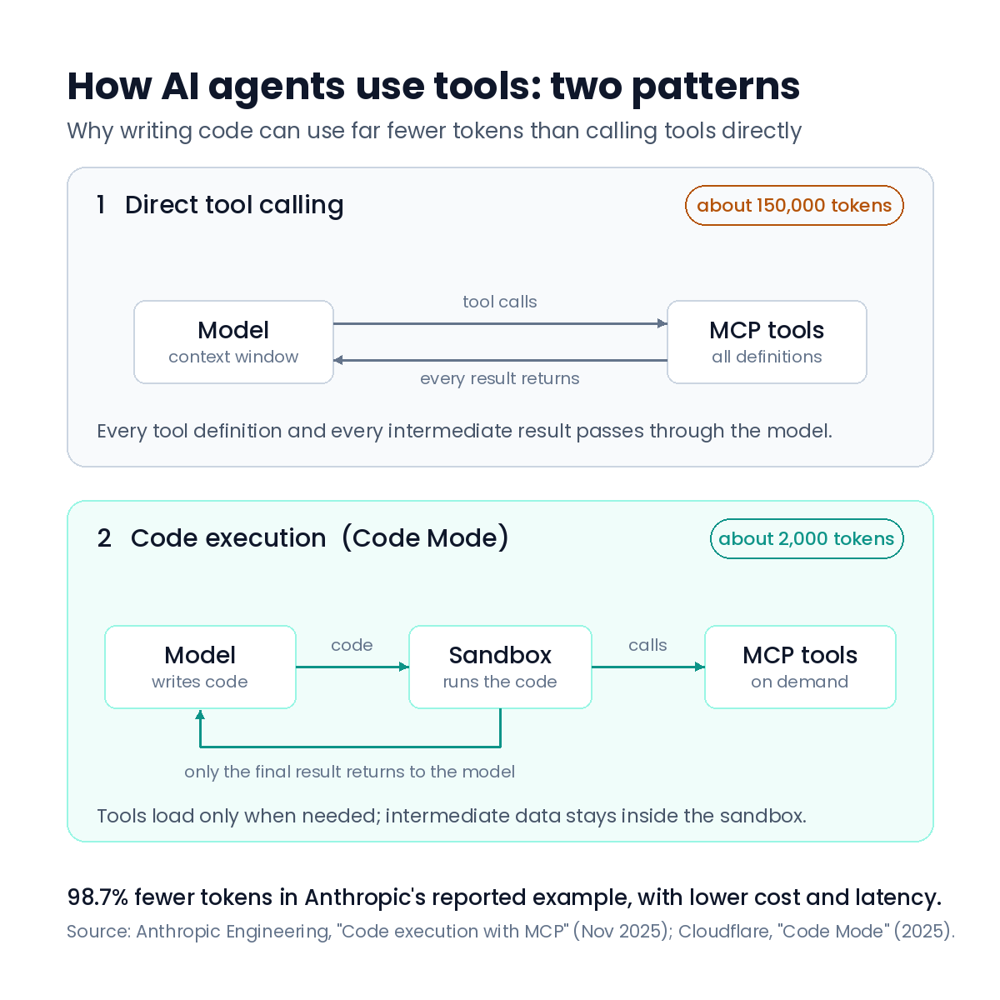
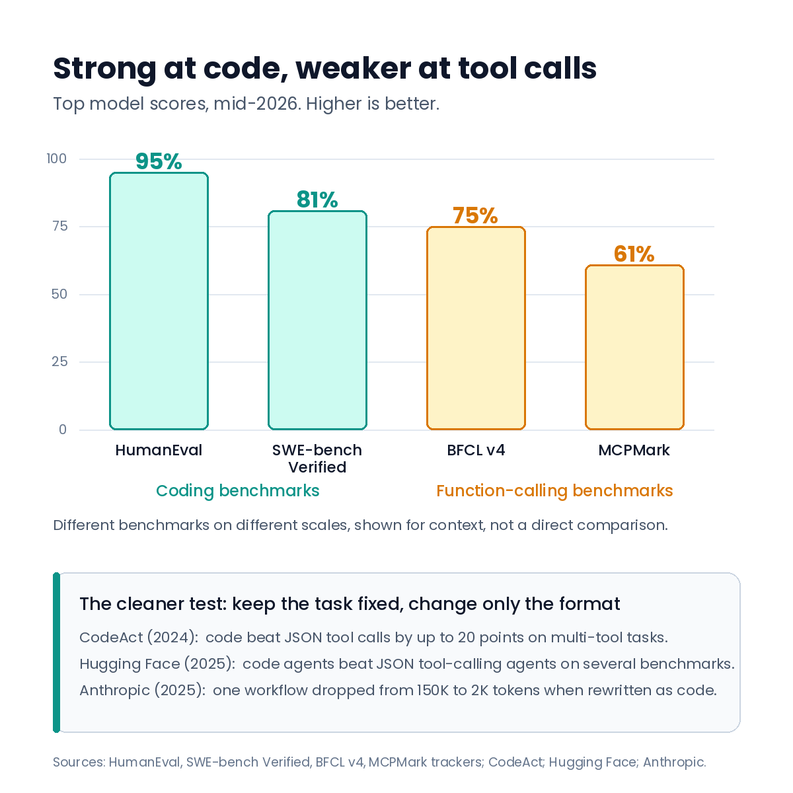

Code execution: a more efficient way for AI agents to use tools¶
Published June 29, 2026
AI agents need to take actions, not just produce text. There are three common ways to give an agent that ability, and they differ in how the model expresses what it wants to do.
The first is direct tool calling over the Model Context Protocol (MCP). The second is local code execution, the approach used by Open Interpreter. The third is sandboxed code execution against a tool API, which Cloudflare calls "Code Mode" and Anthropic calls "code execution with MCP." This post compares the three and explains why the third option is becoming a good default for agents that use many tools across many steps.

Figure 1: With direct tool calling, every tool definition and every result passes through the model. With code execution, the model writes code that runs in a sandbox, and only the final result returns.
The three approaches¶
Direct tool calling (MCP). MCP gives agents a standard way to discover and call external tools. Each tool is shown to the model, and the model produces a tool call: a small JSON object with the tool name and its arguments. The system runs the tool and passes the result back into the model. This is simple and works well, but it has a cost. Models did not see many tool-call formats during training, so they are less reliable at producing them than at writing ordinary code. Every tool definition and every intermediate result also has to pass through the model's context window, which adds tokens, cost, and latency.
Open Interpreter. This open-source tool lets the model write code (Python, JavaScript, or shell) and run it directly on your machine. You describe a task in plain language, and the code runs locally, usually after you approve it. It is very useful for interactive work and one-off automation. The trade-off is access and control: the code runs with broad access to your files and environment, results can vary from run to run, and in its default online mode it sends some data to its own hosted services.
Sandboxed code execution (Code Mode). Here the tools from your MCP servers are turned into a typed code API. The model writes code against that API, and the code runs inside an isolated sandbox. The sandbox cannot reach the open internet or your files. It can only reach the specific tools you allow. The model gets to work in code, which it handles well, while you keep the standard MCP tool surface.
Models handle code better than tool-call formats¶
The main reason this pattern works is straightforward: language models are more reliable at writing code than at producing tool-call formats. Recent results from 2025 support this.
In November 2025, Anthropic's engineering team published "Code execution with MCP: building more efficient agents." In one example, a workflow that used about 150,000 tokens with direct tool calls was rebuilt so the model wrote code to use the same tools. The new version used about 2,000 tokens, a 98.7 percent reduction in tokens, cost, and latency. Cloudflare had described the same idea earlier in 2025 under the name "Code Mode." Both groups make the same point: models are good at writing code, and agents work better when they use that strength.
Hugging Face reported a similar result in 2025. In their "CodeAgents + Structure" work, agents that expressed actions as code did better than a traditional JSON tool-calling agent across several benchmarks (GAIA, MATH, SimpleQA, and Frames). Their smolagents framework treats a code-writing agent as the default.
The clearest controlled test is still the CodeAct study. It compared text, JSON, and code as action formats across 17 models, keeping the task the same and changing only the format. Code actions scored up to 20 points higher on multi-tool tasks and used about 30 percent fewer steps. The 2025 results are the same finding at a larger, production scale.
The reasons are easy to see. Code lets the model use loops, conditionals, and variables to combine several steps in one action. It lets the model reuse functions from libraries it already knows. And model training contains a large amount of real code, while tool-call formats are a small and mostly synthetic part of training data.
What the benchmarks suggest¶
Benchmark scores point in the same direction, but they need to be read with care.

Figure 2: Models are close to saturation on coding tests, while dedicated function-calling tests still have more room. These are different benchmarks on different scales, so this is context, not a direct comparison.
Models are now near the ceiling on coding tests. HumanEval is saturated above 95 percent, and the best SWE-bench Verified scores are around 80 percent. Dedicated function-calling tests still have more room: top models reach about 75 percent on the Berkeley Function Calling Leaderboard (BFCL v4) and about 61 percent on MCPMark.
These are different benchmarks measured on different scales, so they are not a direct head-to-head. Some agentic tool-use benchmarks actually score high, such as TAU-bench and MCP-Atlas, which is why a simple "coding high, tool calling low" claim would be misleading. The reliable signal is the controlled comparison in the previous section, where only the format changes. There, code consistently wins.
Compared to direct MCP¶
If models work better in code, then turning MCP tools into a code API captures that advantage. Three benefits follow.
It scales to many tools. When a model is shown dozens of tools at once, it can struggle to choose the right one. Presented as a typed API with comments, the same tools are easier for the model to navigate, much like reading a code library.
It avoids passing data through the model. With direct calling, every intermediate result returns to the model only to be copied into the next call. With code, the model writes a script that chains the calls and keeps the data in variables, returning only the final result. This is the main source of the token and step savings reported above.
It keeps what makes MCP useful. You still get MCP's standard discovery, its authorization handled out of band, and its self-describing schemas. You only change how the model uses the tools, not the protocol itself.
Compared to Open Interpreter¶
Open Interpreter already uses the "let the model write code" idea, so the difference here is not the format. It is safety and control.
Isolation by default. Open Interpreter runs code on your machine with access to your files. Sandboxed code execution starts with no internet or file access, and the only way out is the specific tools you allow. You do not have to predict what the model might touch, because the boundary is fixed by the API you expose.
Secrets stay out of reach. The sandbox reaches tools through bindings rather than by making its own authenticated calls, so access tokens stay with the system and never enter the model. A local interpreter that holds your environment variables cannot offer the same guarantee as easily.
Built for unattended agents. Open Interpreter works best as an interactive assistant, where a person approves each step. Sandboxed code execution is designed for agent loops that run without a person watching, using short-lived sandboxes and a limited set of tools.
When each approach fits¶
| Direct MCP | Open Interpreter | Code Mode | |
|---|---|---|---|
| Action format | JSON tool calls | Local code | Code against a tool API |
| Suits the model's code skill | No | Yes | Yes |
| Handles many tools | Weakens quickly | Open-ended | Yes |
| Multi-step efficiency | Result passes through model each call | Good | Good, chains in one block |
| Default isolation | Depends on harness | Full local access | Sandboxed, allowed tools only |
| Secret exposure | Possible | Possible | Kept out of the model |
| Best fit | Simple, few-tool agents | Interactive, human-approved | Unattended, many-tool agents |
No single approach is best for everything.
Direct MCP is a good choice when you have only a few tools and short chains. The extra setup of a sandbox and a generated API is not worth it for a single lookup. For frontier models, the gap in raw tool-calling has also narrowed, so the benefit is largest for smaller or open-weight models and for complex, multi-step tasks.
Open Interpreter is the better fit when local access is the goal, such as working with files on your own machine or exploring data interactively. The isolation in code execution is a benefit for agents but a limitation if you need local reach.
Sandboxed code execution has its own costs. It needs a secure sandbox, a step to convert tool schemas into a code API, and a runtime that can start and stop code quickly. Not every stack has this ready, though containers and lightweight sandboxes can fill the gap.
Summary¶
The core point is that language models are more reliable at writing code than at producing tool-call formats. Direct MCP does not use this strength. Open Interpreter uses it but gives the model broad local access. Sandboxed code execution keeps the code-writing advantage and the standard MCP tool surface, and adds isolation and secret protection. For agents that use many tools across many steps, it is becoming an efficient and safer default.
References: Cloudflare, "Code Mode: the better way to use MCP" (2025); Anthropic Engineering, "Code execution with MCP: building more efficient agents" (Adam Jones and Conor Kelly, Nov 2025); Hugging Face, "CodeAgents + Structure: A Better Way to Execute Actions" (2025) and the smolagents framework; Wang et al., "Executable Code Actions Elicit Better LLM Agents" (CodeAct, ICML 2024), the foundational controlled study; Berkeley Function Calling Leaderboard v4; SWE-bench Verified, HumanEval, and MCPMark trackers; Open Interpreter documentation. Benchmark figures are top model scores as of mid-2026 and shift over time; verify before publishing.